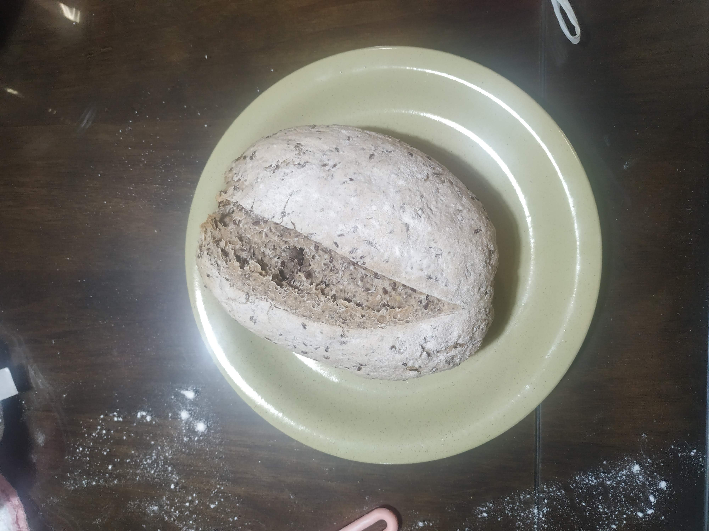

Página inicial
Pão caseiro

Nada como um pão quentinho, perfeito para todas as ocasiões.
Ingredientes
- 360g de farinha de trigo
- 230ml de água
- 4g de fermento biológico
- 7g de sal
Modo de preparo
- Misturar os ingredientes até formar uma massa uniforme e então
deixar a massa descansar por 10 minutos.
- Sovar a massa por 10 minutos.
- Deixar a massa descansar por 1 hora.
- Modelar o pão e deixar descansar por 30 minutos.
- Pré-aquecer o forno a 250°C por 30 minutos.
- Assar o pão, no vapor d'água, por aproximadamente 20 minutos.
- Assar o pão por mais 30 minutos sem vapor d'água.
- Após pronto esperar 30 minutos antes de cortar o pão.
E então nosso delicioso pão está pronto.
Voltar ao início